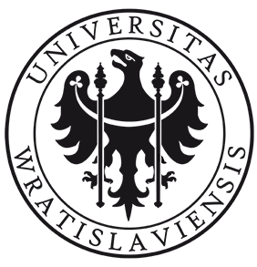

Jarosław (Jarek) Chilimoniuk
📠Bio
👨‍🔬 I am a passionate researcher with experience in laboratory work 🧪, bioinformatics 🖥️, and administrative tasks 📑. My main focus is on amyloids 🌀, both in vivo 🧬 and in silico 🖥️, as well as data curation 📊 and analysis 📉. I specialize in developing and deploying Shiny apps 📱 for interactive data visualization, making complex biological data more accessible and user-friendly.
🔠I love exploring new approaches and experimenting with fresh ideas 💡. Trying different methods often gives me a new perspective 👀 on challenges, helping me overcome roadblocks 🚧 and push my research forward.
🌠I am highly mobile and enjoy working in different countries ✈ï¸. Experiencing how various scientific communities tackle university challenges ğŸ›ï¸, research struggles 🧑â€ğŸ”¬, and work culture differences 🤠gives me valuable insights and broadens my approach to problem-solving.
🎲🎮📚🛹 Board games, computer games, books, and skateboarding? That’s life, that’s love! Whether strategizing over a game, getting lost in a great book, or cruising on my skateboard, I believe in balancing work with the things that bring joy and inspiration.
⚡ With expertise in wet lab experiments 🏺, computational analysis 🤖, and project management 📋, I thrive at the intersection of biology 🧪 and informatics 💻, combining data-driven insights with hands-on scientific exploration. Always eager to learn, innovate, and collaborate 🤝, I am driven by curiosity and a passion for discovery 🚀
📱 Contact
🚀 Research stays
💻🧫 Experience
📠Education
 University of Wrocław
BioTechNan - Program of Interdisciplinary Environmental PhD Studies KNOW in the area of Biotechnology and Nanotechnology
2018-10-01 - 2023-07-06PhD thesis: Bioinformatic and experimental analyses of bacterial functional amyloids CsgA and CsgB 📠Wrocław, Poland
Brandenburg University of Technology Cottbus-Senftenberg
Exchange studies, German Academic Exchange Service scholarship, Biotechnology
2020-10-01 - 2021-09-30📠Senftenberg, Germany
University of Wrocław
Molecular Biology
2017-10-01 - 2018-09-30📠Wrocław, Poland
University of Warsaw
Biotechnology, specialization in Molecular Biology
2013-10-01 - 2015-08-13MSc thesis: Disposal of hardly biodegradable feedstock wastes in methane fermentation process 📠Warsaw, Poland
University of Warsaw
Biotechnology
2010-10-01 - 2013-09-06
BSc thesis: Localization of hSUV3 protein and γ-tubulin at different developmental stages of the human umbilical cord blood-derived neural stem cell line (HUCB-NSC) 📠Warsaw, Poland
ğŸ‘🻠Conferences, workshops, training schools ğŸ¤ğŸ»
📖 Publications
🧑🏻‍🔬 Other activities
- Association of Wrocław R Users (STWUR) meetings co-organizer - R language workshops
- Co-organizer of WhyR? 2019 Conference in Warsaw
- Co-organizer of WhyR? 2018 Conference in Wrocław
- CEO of PhD Bioinformatics Club at University of Wrocław, 2017-2023